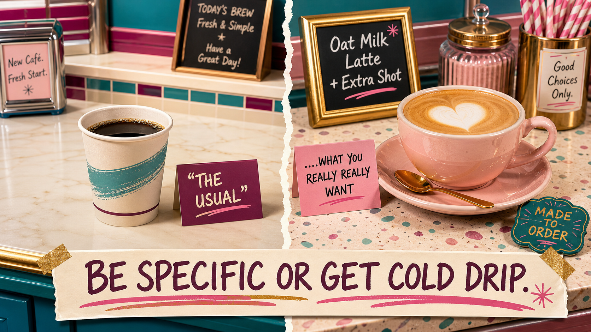

Tell Me What You Want
The one in which she types something vague into the machine, gets back the world's most useless paragraph, channels David Rose demanding very specific things, and watches AI produce something she'd actually send to a VP.

It's nine-fifteen on a Tuesday, and I am losing a staring contest with a paragraph.
I'd asked one of the AI tools to draft talking points for a meeting, and what it gave back is… technically words:
It reads like a motivational poster that went to business school and came back worse. And the maddening part? Yesterday, the same tool wrote me a project update for my director that I barely had to touch. Same app. Same me. Same tragic office lighting. One day it reads my mind, and the next it hands me a throw pillow.
Why does AI read my mind some days, and completely ignore me on others?

Tell me what you want, what you really, really want
So I did what I do with any problem I can't out-stubborn at my desk: I took it to town. Corner table at the Blend & Snap, oat latte, KSVL on low. I pulled both drafts back up — the word-salad from that morning, the director update I'd barely touched — and set them side by side. It wasn't the tool that changed between the two. It was me: what I'd typed to get each one.
Think about your coffee order. At your regular spot, you barely have to say it — they know your usual, because you built that over a hundred Tuesdays. But AI is not your regular spot. It's the brand-new café across town, and if you breeze in and say "the usual," you get a blank look — or a plain drip going cold on the counter, which you can't even be mad about, because you never told the barista what you actually wanted to drink.
The AI isn't holding out on you — it genuinely can't see what you didn't say. It has your words, and nothing else. Not your job, not who's reading this, not the meeting on your calendar. Every detail you leave in your head is one it's forced to guess at. So you spell it out — every time — and the guessing stops. That's prompting.
And that word everyone throws around — prompt? The computer nerds didn’t even invent it. They lifted it from the theater kids. Two lunch tables that never once overlapped — and the AV club quietly swiped ‘prompt’ right off the drama club.
The Spice Girls had this figured out decades ago. (Wait… decades? Oof. That's a jagged little pill to swallow, but here we are.) “Tell me what you want, what you really, really want.” They weren't gesturing at a vibe. They wanted specifics. AI is exactly the same: it'll zig-a-zig-ah all day, but it only does useful work when you tell it precisely what you need.

The David Rose School of Prompting
Our patron saint this week is David Rose — and yes, we know, he’s not exactly ’90s or 2000s. But he’s so fabulous we made one exception. (In the immortal words of Shakespeare: a Rose by any other name…) If you’ve seen Schitt’s Creek, you know David is pathologically specific — the wine, the sweater, the exact drape of the sweater.
You remember Moira telling David to "fold in the cheese," and David standing in that kitchen screaming, "WHAT DOES THAT MEAN?!" That is your AI, every single time you type "write me an email about the project." It's trying. But you handed it "fold in the cheese" — when what it needed was "scrape the spatula along the bottom of the bowl, lift, turn it over, turn the bowl, and repeat."
The fix turned out to be something I already knew how to do. I stopped typing at AI like a Google search — three vague words, fingers crossed — and started briefing it like a smart new hire in her first week. Every one of these is a question you already ask when you hand work to a person. Prompting isn't technical. It's delegation.
- Who's it for?
- The audience changes everything.
- What do they care about?
- Give it the stakes.
- What's the tone?
- Warm, blunt, formal, funny.
- How long?
- A line, a paragraph, a page.
- What to leave out?
- Boundaries before the draft wanders off.
- Any example to copy?
- The strongest move of all.
If you only ever steal one, steal the last: show it an example. Paste in one you already love — an email that landed, a summary that worked — and say "match this." Nothing gets you a better answer faster.

Same task, two asks
You've got a twelve-page policy change to get in front of six stakeholders before a 2 p.m. meeting — and it's dense: regulatory language, cross-references, defined terms nested three deep. Reading it properly is an hour you do not have. So you paste the whole thing into the chat. This is exactly the kind of job you hand to AI — not because you can't write a summary, but because you don't have time to read all twelve pages and find what actually matters. The catch: it only works if you ask well.
"Summarize this policy change."
summarize this policy change for my stakeholders
Accurate, thorough, and useless in the two minutes you have — it summarized everything and prioritized nothing. You still have to do the reading.
6 senior mgrs, 2 min before a meeting. What's changing, when it takes effect, what teams do differently, any budget impact. Flag anything that only applies to some teams. Cut the backstory. Bullets, ~150 words. Match last quarter's summary that landed →
What's changing: Quarterly compliance reports will now require sign-off from both the team lead and a designated finance partner, who reviews the figures before submission. Previously the team lead signed alone, with no second review.
When it takes effect: October 1. The first dual-signed report is due December 31, covering Q4 activity.
What your team does differently: Assign a finance partner, route each quarterly report through them before submitting, and build roughly three extra business days into the cycle for the added review.
Budget impact: No direct cost, but plan for about two hours of finance-partner time per quarter — worth confirming with your finance lead.
Who's affected: Full-time teams only. Contractors and vendor-managed teams stay on the current process until Q1.
What we need from you: Name your finance partner by September 15 so your workflow is ready before the first cycle begins.
A full "It's Britney, bitch" moment — exactly what you asked for.
Ninety seconds to write · forty-five to check · forwardable without touching a word
That one line — full-time teams only, contractors exempt — is the whole reason you opened AI. You could have written the summary yourself. What you couldn't do — not in the twenty minutes before the meeting — was read twelve pages of compliance language and catch the contractor exemption buried on page nine. That's not a writing task; it's a reading task, and it's the part AI just did for you — with an output tailored to your instructions.
And if the first answer isn't quite right? You don't start from scratch — you tell it what's off, exactly like you would with a real new hire. It's calling into the radio and asking for exactly what you want to hear (or finally shelling out twenty bucks at HMV for the CD) — not constantly changing the station, hoping it lands on one playing a track you like.
Bring it to the FAiRY Godmother
This is the whole reason we built her. Bring her a rough prompt — or the question you're not sure how to ask — and she'll glow the prompt into a real brief, tell you what was missing, and give you the advice to go with it. It's David Rose (or any other Patron Saint), on tap — three wishes a visit, then back tomorrow for three more.
Get your prompt glow-up →By now a voice in the back of your head might be muttering that briefing, giving context, knowing what to cut — it all sounds a little soft to count as a real skill. Hold that thought.
Turns out "soft" was the hard part
Dell'Acqua, McFowland, Mollick et al., "Navigating the Jagged Technological Frontier" (2023). Verified 2026-07-07. Scope: gains apply to AI-suitable tasks — not a blanket "AI makes everyone better at everything."
The best line about it comes from someone who co-authored that very study — Ethan Mollick, a Wharton professor and one of the most-read, most-trusted voices on actually using AI:
"The skills that are so often dismissed as 'soft' turned out to be the hard ones."
Which means the woman who writes a thorough brief — who thinks about her reader, spells out what she needs, knows what to cut — is already ahead of the guy who types three words and expects the machine to read his mind. Communicating clearly. Thinking critically. Reading what a person actually needs. Those got filed under "soft skills" for a generation — the consolation prize. But study after study now lands in the same place: in the age of AI, those are the skills that separate the people who win. And not instead of the hard skills — on top of them. A sharp communicator with real judgment who also knows her stuff was never the soft skill set. That's the one that wins.
So… what's a prompt, really?
A prompt isn't code. It's a delegation. You're not programming a machine — you're briefing an assistant. And you already know how to brief. This one is just faster, never sleeps, and will absolutely fold the cheese wrong if you don't tell her how.
Got a sharper "remember, ladies" than that one? Post it in the rooms — our residents-only chats at the sorority house. Your Residence Card gets you in the door, and favourites get featured, with credit.
Episode 03 · The Burn Book Problem
The machine hands our heroine a beautiful, confident answer — with one small detail that could blow up the whole meeting. See you next Wednesday, in Sunnyvale.
Your Wednesday

Same task, twice
Hand one real task to an AI tool twice. First the lazy way — three vague words, the way you'd Google it. Then the David Rose way: who it's for, what they care about, the tone, the length, and what to leave out. Put the two answers side by side. The difference isn't the tool getting smarter between tries — it's you getting specific.

Three words, defined
PromptWhat you type in — Elle Woods didn't just say "let me in."+
What you type into the chat box. Remember Elle Woods' Harvard application video? She didn't just say "let me in" — she was specific, personal, tailored to her audience, impossible to ignore. That's a good prompt. Not code, not a spell — you being clear about who it's for, what you need, and what "good" looks like.
ContextThe background that makes it understand your situation — Miranda's cerulean speech.+
The background information that makes AI understand your situation, not the generic version. Remember Miranda Priestly's cerulean speech? Andy thinks it's just a blue sweater; Miranda traces the exact shade through eight designers and a clearance bin. When you say "this is for senior managers who have two minutes and don't care about the backstory," you've just given AI the cerulean speech. Without context, you get generic blue. With it, cerulean.
TokenA chunk of text the model reads. More context has a cost.+
A chunk of text the model processes. You don't need to obsess over tokens yet — just know that more context has a cost and tools have limits. If a chat starts acting forgetful or vague, it may be holding more material than it comfortably can at once.
This week's soundtrack is a real treat — "Tell Me What You Want" on KSVL 99.9. Do not skip it. It's this week's lesson, in platform sandals. Don't just learn from books. Learn from hooks.